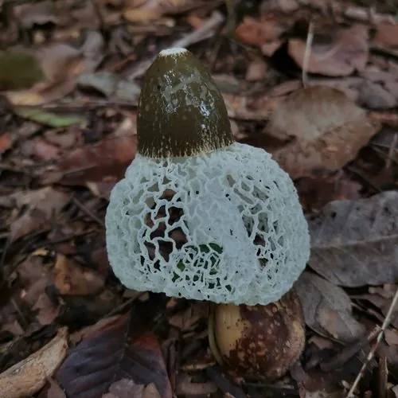

真菌 · 真菌界
红托竹荪 Phallus rubrovolvatus

红托竹荪的菌柄顶端垂下白色网状菌裙，基部菌托呈鲜艳的紫红色，是名贵的食用菌，多生于竹林下的腐殖土中。
- 分类
- 门担子菌门纲伞菌纲目鬼笔目科鬼笔科属鬼笔属
- 栖息环境
- 竹林与阔叶林下的腐殖质土壤、腐木旁，喜温暖湿润
- 地理分布
- 中国贵州、云南、四川等地，现有人工栽培
- 保护级别
- 暂无评估（IUCN 未评估，中国未列入重点保护名录）
物种志
红托竹荪是担子菌门鬼笔科的真菌，子实体由菌托、菌柄、菌盖和菌裙组成。菌托位于基部，呈袋状，紫红色至深红色，是本种最显著的特征；菌柄白色、海绵质，圆柱形，中空，长 10–20 cm；菌盖钟形，表面覆盖暗绿色、有臭味的产孢黏液，顶端有孔口；菌裙从菌盖下方垂下，白色，呈细密的网状，长可达 10 cm。孢子印淡绿色。
红托竹荪野生于竹林、阔叶林下的腐殖质土壤和腐木旁，靠分解有机质生长，主要分布于中国西南的贵州、云南、四川等地。与菌托白色的竹荪相比，它的菌托呈紫红色，形态更醒目。红托竹荪菌肉脆嫩、香气清雅，是宴席上的名贵食材，可炖汤、炒食和干制；食用前要去掉带臭味的菌盖和菌托，只保留菌柄和菌裙。目前贵州等地已实现人工栽培。
形态与习性
- 菌托袋状，紫红色至深红色
- 菌柄白色海绵质，长 10–20 cm
- 菌裙白色网状，长可达 10 cm
- 菌盖钟形，覆盖暗绿色产孢黏液
- 孢子印淡绿色
- 食用性可食，食用前去除菌盖和菌托
- 生境竹林与阔叶林下腐殖土
趣味知识
- 红托竹荪的菌托是紫红色的，这是它与白托竹荪最直观的区别。
- 它的白色网状菌裙从菌盖下垂下，像一条纱裙。
- 菌盖上的暗绿色黏液又臭又黏，靠臭味吸引昆虫传播孢子。
- 红托竹荪是贵州等地的名贵食材，现已能人工栽培。